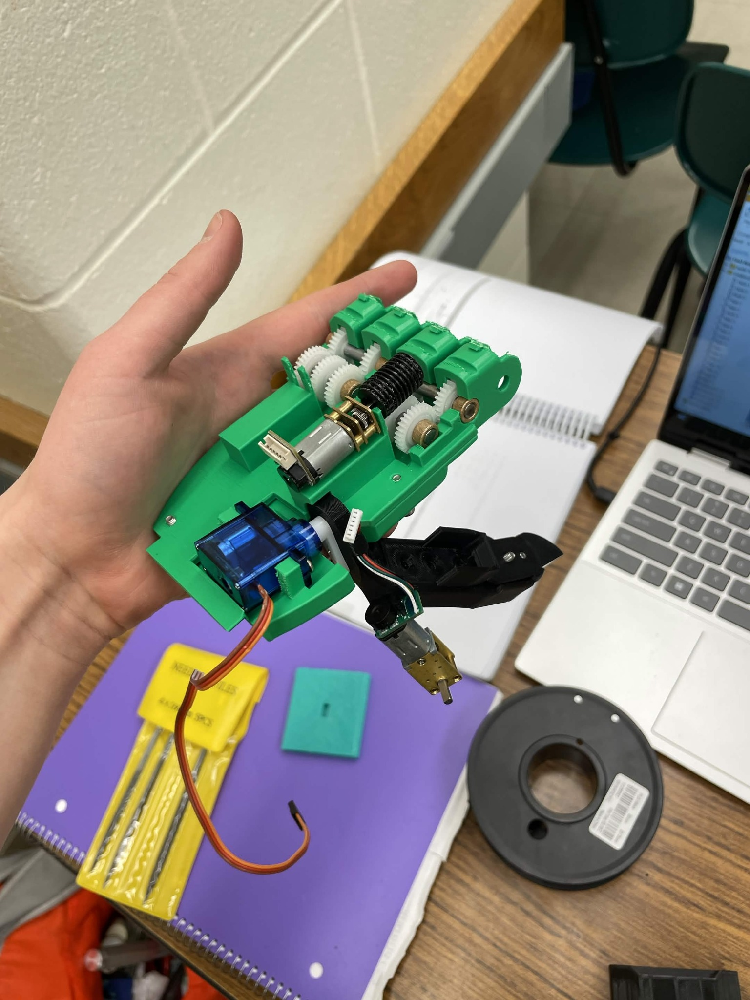
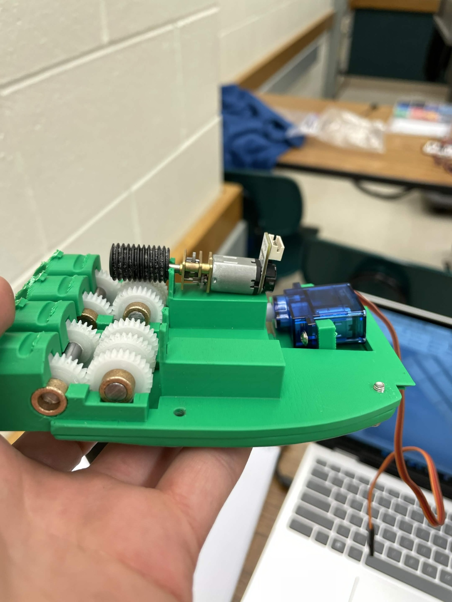
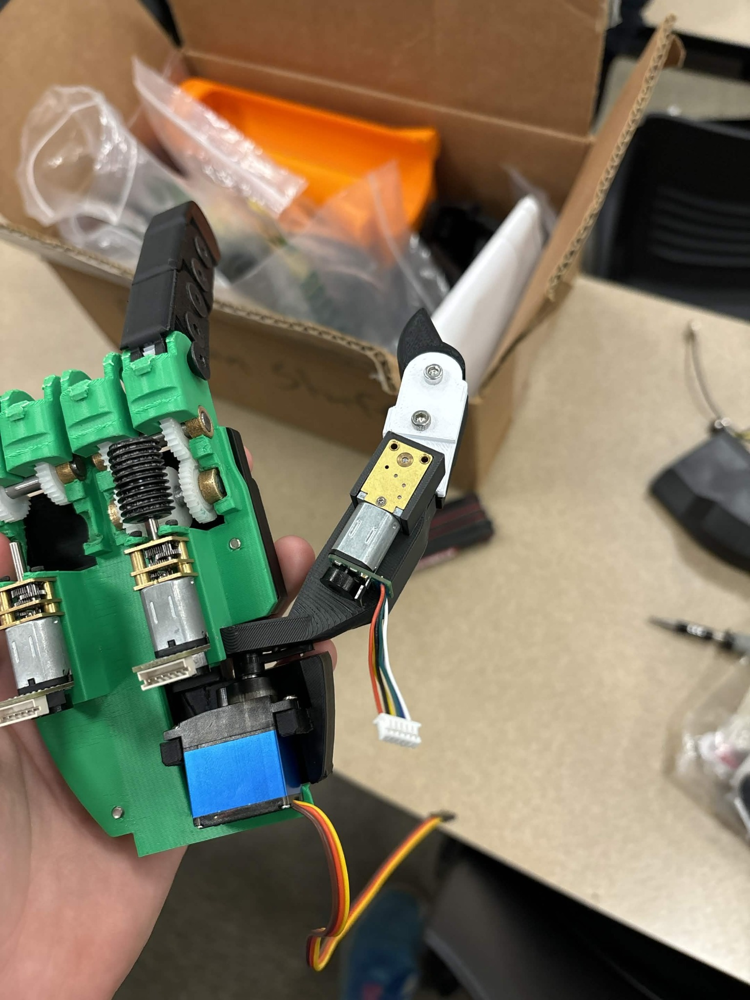

Fluid Power Simulation
Swashplate Piston Pump Simulation
Simulated a 45 cc/rev swashplate piston pump with 11 pistons to model pump
kinematics, flow rate, chamber pressure, Poiseuille and Couette leakages,
and volumetric efficiency across varying RPM and swash plate angles.
Built design assumptions from pump geometry, valve plate timing, orifice flow,
leakage equations, and fluid properties, then compared performance trends across
multiple operating conditions.
Tools: MATLAB, Autodesk Inventor, Fluid Power Modeling,
Pump Simulation, Data Visualization
View project PDF
Energy & Reliability
Plate Air Preheater Performance Model
In 2025, developed an Excel/VBA performance model to monitor heat duty loss, fouling factor, and
fuel cost impacts for refinery plate air preheaters, identifying a crude unit APH responsible
for approximately $35,000 in annual excess fuel costs.
In 2026, transferred the model to Seeq/Python for implementation as a global tool across ExxonMobil refinery and chemical plant air preheaters to monitor performance over time.
Tools: Excel, VBA, Python, Seeq, Heat Transfer, Mechanical Integrity
Manufacturing Automation
Automated Dimensional Measurement Analysis
Automated aerospace casting dimensional analysis with Python and VBA, creating trend
reports, Trailing 30 vs. Trailing 60 comparisons, Pareto charts, and airfoil location
visualizations that reduced recurring analysis time.
Tools: Python, VBA, Minitab, Excel, Statistical Analysis
CAD & Manufacturing
3D-Printed Airfoil Alignment Fixture
In investment casting, dimensional errors introduced during wax assembly can propagate
into the final engine component. While working on military and commercial grade engine
parts, I helped address inconsistent axial lean in hand-placed airfoils that varied by operator.
I worked with production operators to understand the stator assembly process, learned
how to use a ScanBox blue light scanner, scanned existing wax starter blocks, and reverse
engineered the geometry in Siemens NX. I then rebuilt the fixture as an adjustable CAD
model so future dimensional trials could be modified directly in CAD instead of rebuilding
and rescanning a new starter block each time.
Tools: Siemens NX, ScanBox Blue Light Scanning, Reverse Engineering,
Parametric CAD, Investment Casting, Manufacturing Process Improvement
Human-Centered Design
3D-Printed Prosthetic Hand Assembly
Designed and integrated a functional electromechanical prosthetic hand assembly through
Purdue 3-D Printed Prosthetics Club, combining 3D-printed structural components,
geared motors, servo actuation, finger mechanisms, and internal electronics into a working prototype.
This project strengthened my mechanical design, reverse engineering, gear train,
prototyping, and electromechanical integration skills while giving me hands-on experience
turning CAD concepts into physical assemblies.



Tools: CAD, 3D Printing, Mechanical Design, Reverse Engineering, Gear Systems, Electromechanical Integration, Team Collaboration